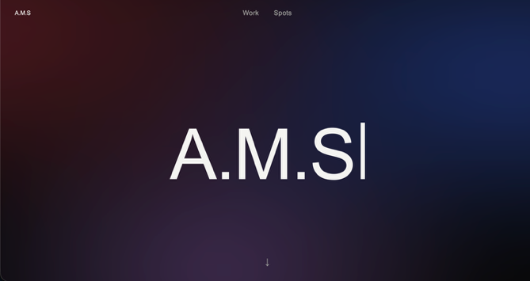
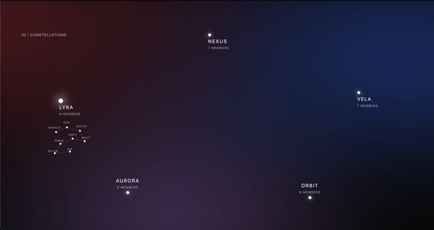
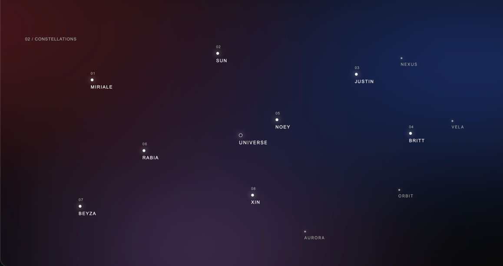
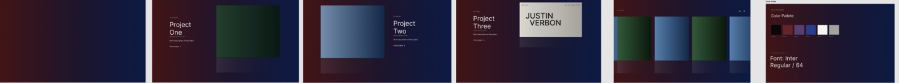
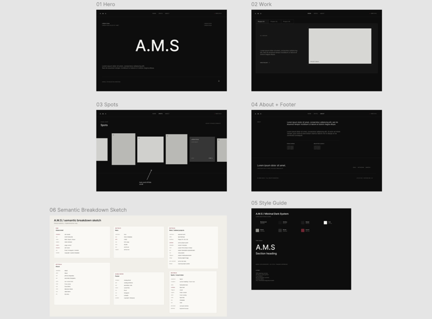

Project / 05
Design and development
Squad-page project
This is a project I worked on for a squad page. I first made two sketches and then started building the website. It is a static site made with HTML, CSS and vanilla JavaScript, with no framework required.
- Stack
- HTML / CSS / JavaScript
- Type
- Static website
01 / Homepage
A.M.S

This is the home screen. On the actual website, the large A.M.S title has a typewriter effect. The image above links directly to the finished site, so you can see the interaction for yourself.
Because the website is static, I did not have to worry about credentials or add a framework to the project.
02 / Constellations
Exploring the squad

The main view is made up of constellation groups. When you hover over one of them, like Lyra in this image, a smaller constellation appears with the names of its members.
Each name is clickable. Selecting one takes you into the corresponding constellation, where the members are shown individually.
03 / Member view
Inside a constellation

Inside a constellation, everything is still clickable. Hovering over a member reveals a preview of the project connected to that person.
The Universe control takes you back to the previous constellation view, so you can continue exploring the other groups.
04 / Process
Earlier directions


These are some of my first designs. They changed quite a lot before the final version, but that is what design is about: it rarely works the first time.
In this case, the projects section was the part that changed. I liked the rest of the direction, so I kept it and continued refining the work from there.
That is all for now. Until next time.